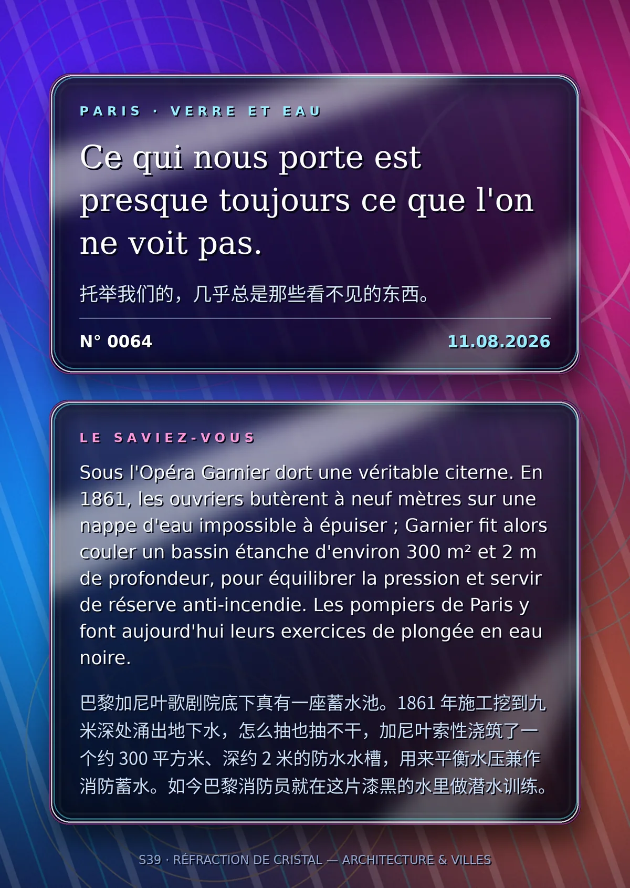

Ce qui nous porte est presque toujours ce que l'on ne voit pas.（托举我们的，几乎总是那些看不见的东西。）
Sous l'Opéra Garnier dort une véritable citerne. En 1861, les ouvriers butèrent à neuf mètres sur une nappe d'eau impossible à épuiser ; Garnier fit alors couler un bassin étanche d'environ 300 m² et 2 m de profondeur, pour équilibrer la pression et servir de réserve anti-incendie. Les pompiers de Paris y font aujourd'hui leurs exercices de plongée en eau noire.（巴黎加尼叶歌剧院底下真有一座蓄水池。1861 年施工挖到九米深处涌出地下水，怎么抽也抽不干，加尼叶索性浇筑了一个约 300 平方米、深约 2 米的防水水槽，用来平衡水压兼作消防蓄水。如今巴黎消防员就在这片漆黑的水里做潜水训练。）